Study 17 · 6 October 2026
Looks people get
24 real-time looks on objects like our stones. → marks the ones built on the J in Study 18.
Candy gloss and soft plastic
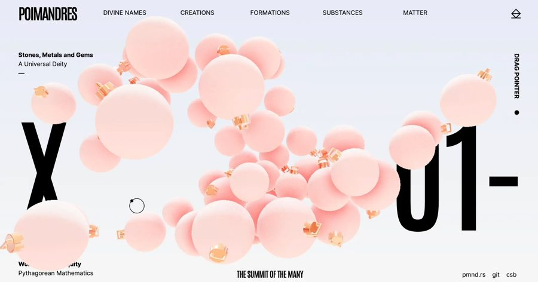
pmndrs · baublesPink gloss on white; tinted shade where they touch→ Candy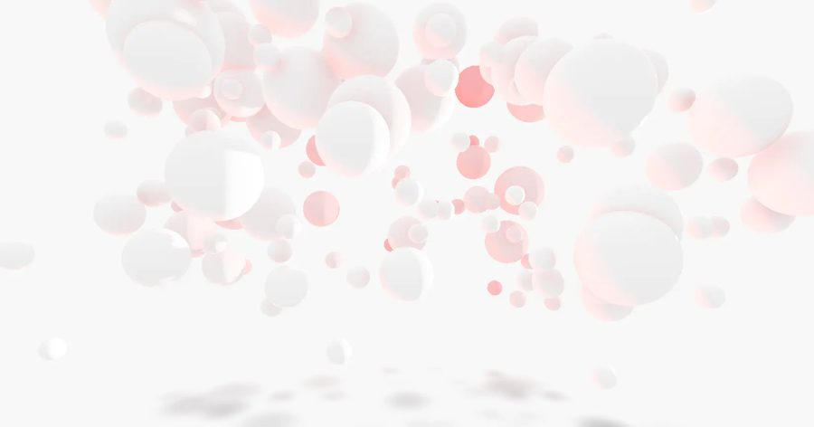
pmndrs · hi-key bubblesMatte white, pink-tinted occlusion, dissolves into the page→ Sugared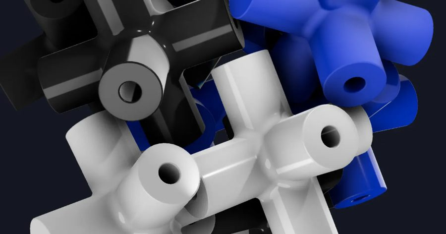
pmndrs · Lusion connectorsSoft toy plastic, one glass piece among them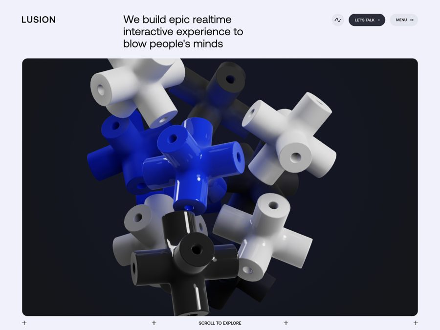
Lusion v3A real site: the premium soft-plastic finish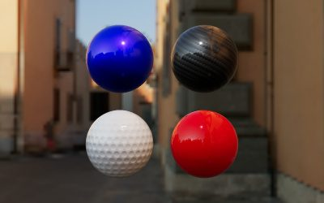
three.js · clearcoatLacquer over colour, the direct upgrade to Study 16→ Studio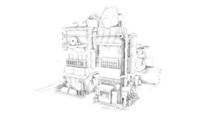
three.js · GTAOOcclusion alone: what makes packed things read packed→ Candy (baked instead)Glass
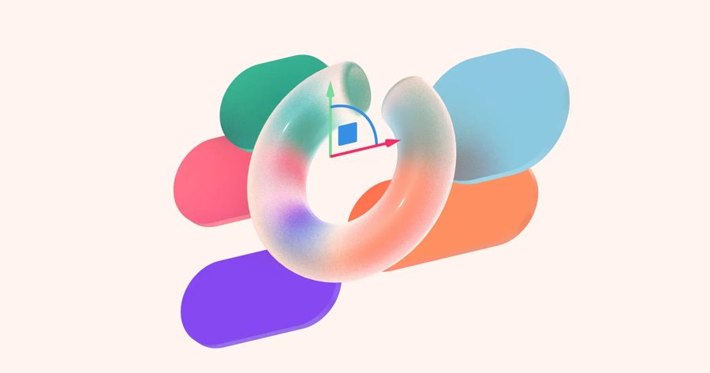
pmndrs · Spline glass shapesPastel shapes behind frosted glass→ Frosted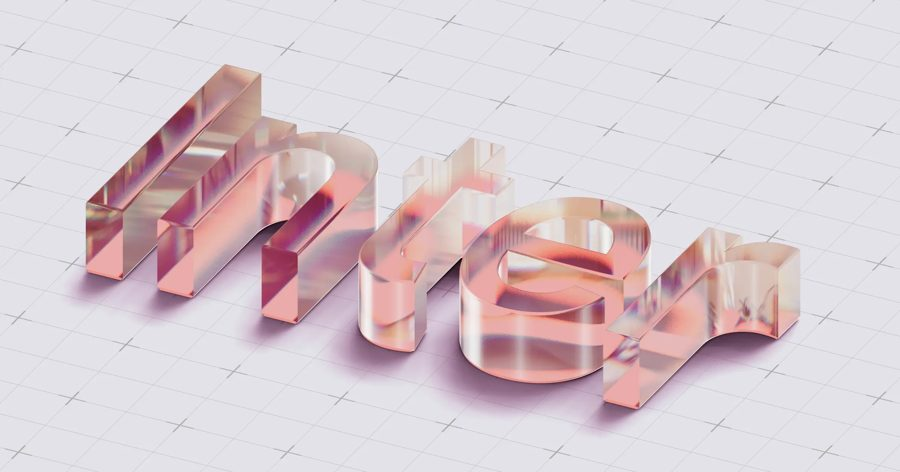
pmndrs · epoxy resin typePink resin letters on pale ground; hard candy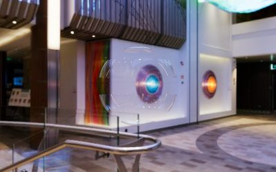
three.js · transmissionGlass with no library; needs something behind it→ Gummy (failed)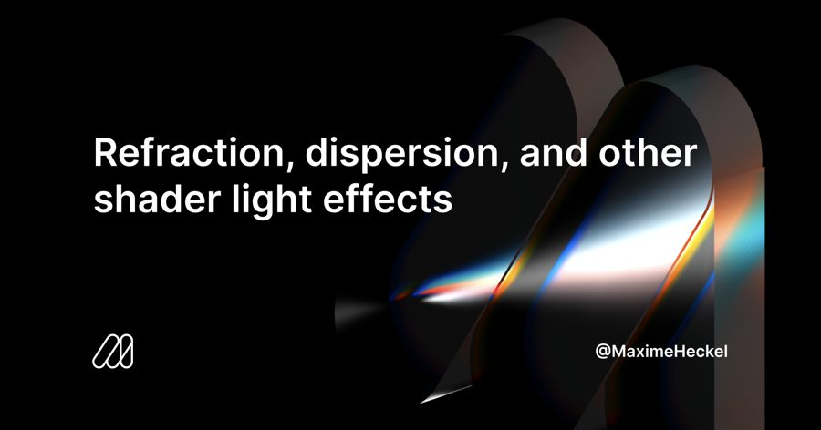
Maxime Heckel · refractionHand-written glass with rainbow edges (title card)Gummy and velvet
Drawn
Not tried
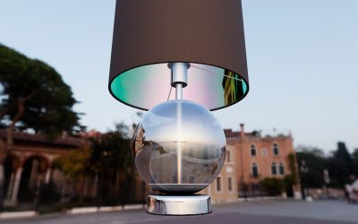
three.js · iridescenceThin film. A finish on Studio, not an idea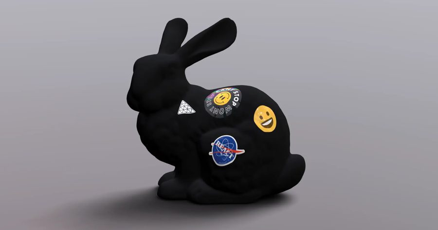
pmndrs · iridescent decalsFoil stickers: an accent, not a look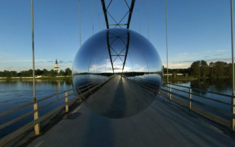
three.js · env mapsChrome. Kills the pastels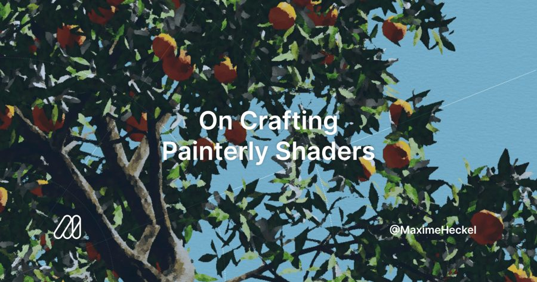
Maxime Heckel · painterlyKuwahara; smooth stones on white give it nothing (title card)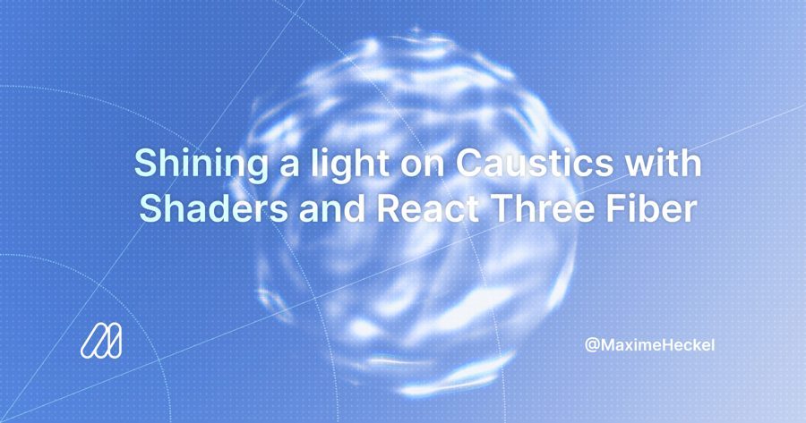
Maxime Heckel · causticsColoured light pooling under glass; too heavy for phones (title card)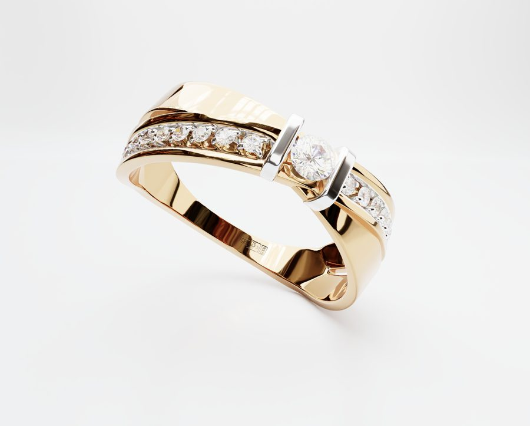
three-gpu-pathtracerOffline quality; for a still poster, not liveCollected by a research agent: every page and image fetched (HTTP 200, real image files). Codrops was unreachable (403), so none of its demos are here. Maxime Heckel's images are his article title cards, not renders of the look. Captured 2026-10-06. Click one to visit.